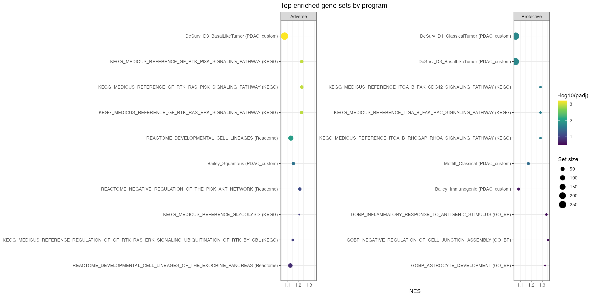
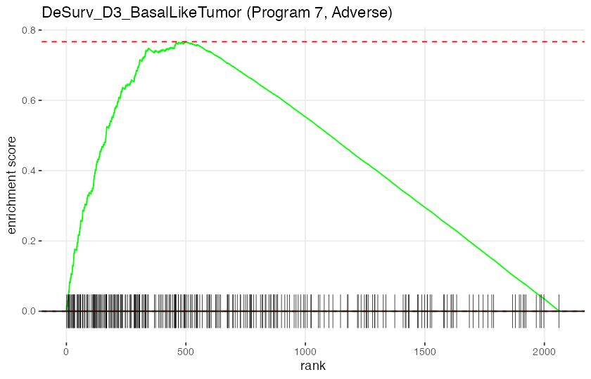
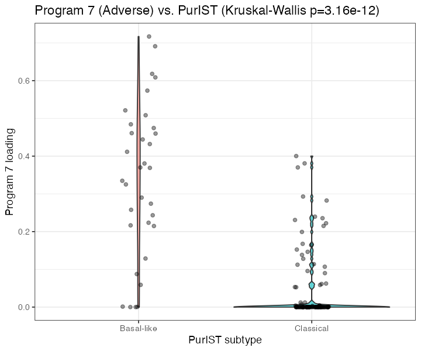
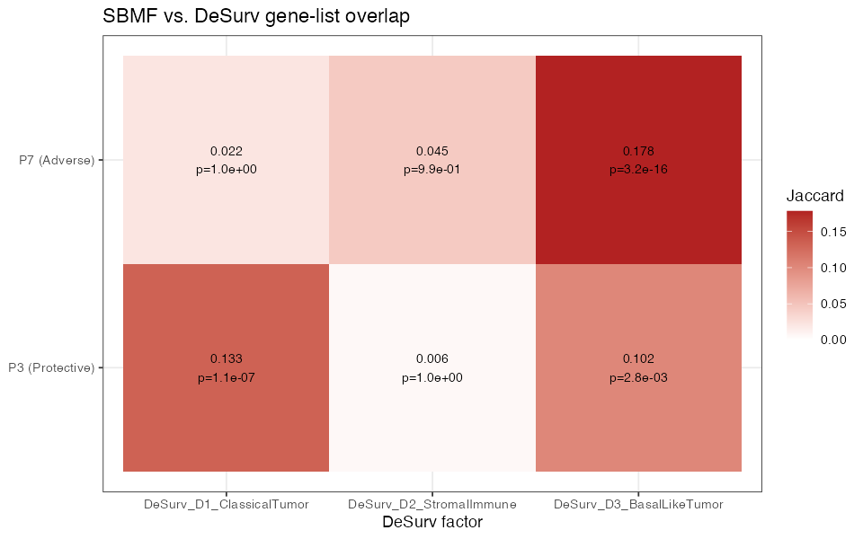

Pathway Enrichment on the Recommended Model’s Survival-Active Gene Programs
1. Motivation and direction convention
The recommended model (YFB, DeSurv-aligned gene selection, K=7, no cohort indicator; mean external C-index = 0.627 across 5 held-out PDAC cohorts) uses only 2 of its 7 latent gene expression programs for survival prediction (\(K_{\text{eff}}=2\)), a result confirmed by three independent methods (warm-start, deflation-init, joint (K,\(\alpha\)) Bayesian optimization; see DECISIONS.md 2026-07-13). This report assigns biology to those two programs — Program 7 and Program 3 — via gene-set enrichment and four independent lines of orthogonal evidence.
Direction convention (DECISIONS.md, 2026-06-16). Adverse/protective direction is read from the marginal survival association of each program’s projection score, not the joint model’s \(\beta\) sign — the two disagree here (joint \(\hat\beta_7=-0.041\), \(\hat\beta_3=+0.011\); a suppression effect among correlated programs). By the marginal convention: Program 7 = Adverse, Program 3 = Protective. All labels and directional predictions below use this convention.
2. Methods
Gene weights come from the D4 fit’s \(\mathbf{F}\) matrix (2064 genes \(\times\) 7 programs; a point-exponential prior makes every weight \(\ge 0\)). Primary enrichment method: fgsea (scoreType="pos", one-sided by construction since weights are non-negative), ranking all 2064 genes by weight per program. Confirmatory method: over-representation analysis (clusterProfiler::enricher) on the top-N weighted genes (N \(\in\) {50,100,150}), background = the same 2064-gene universe (not the whole genome, since these genes are already survival/variance-selected). Gene-set collections: MSigDB Hallmark, Reactome (CP:REACTOME), KEGG (CP:KEGG_MEDICUS), GO Biological Process (GO:BP) via msigdbr 26.1.0 (collection/subcollection arguments; category/subcategory are deprecated as of this version), plus a custom PDAC collection: Moffitt basal/classical (25+25 genes; Moffitt et al. 2015), Bailey 4-subtype (Squamous/Immunogenic/Pancreatic Progenitor/ADEX; 87/145/73/57 genes; Bailey et al. 2016), and DeSurv’s own D1/D2/D3 factor gene lists (270 genes each, extracted from the DeSurv SI appendix, Tables S7-S9; Young et al., PNAS 2026). All 7 programs were enriched (a sanity check that the 5 non-survival-active programs enrich for generic/distinct-but-non-prognostic biology, not nothing); reporting below focuses on Programs 3 and 7. set.seed(1) before all fgsea calls; BH-adjusted p (padj) per collection, reported at padj < 0.10.
3. Gene-set enrichment (F1, T1, C1)
| program | label | collection | set | size | NES | padj |
|---|---|---|---|---|---|---|
| 3 | Protective | PDAC_custom | DeSurv D1 ClassicalTumor | 249 | 1.06 | 0.01700 |
| 3 | Protective | PDAC_custom | DeSurv D3 BasalLikeTumor | 259 | 1.06 | 0.01700 |
| 3 | Protective | KEGG | ITGA B FAK CDC42 SIGNALING PATHWAY | 14 | 1.28 | 0.02300 |
| 3 | Protective | KEGG | ITGA B FAK RAC SIGNALING PATHWAY | 14 | 1.28 | 0.02300 |
| 3 | Protective | KEGG | ITGA B RHOGAP RHOA SIGNALING PATHWAY | 14 | 1.28 | 0.02300 |
| 3 | Protective | PDAC_custom | Moffitt Classical | 21 | 1.17 | 0.03500 |
| 7 | Adverse | PDAC_custom | DeSurv D3 BasalLikeTumor | 259 | 1.08 | 0.00061 |
| 7 | Adverse | KEGG | GF RTK PI3K SIGNALING PATHWAY | 33 | 1.23 | 0.00110 |
| 7 | Adverse | KEGG | GF RTK RAS PI3K SIGNALING PATHWAY | 33 | 1.23 | 0.00110 |
| 7 | Adverse | KEGG | GF RTK RAS ERK SIGNALING PATHWAY | 31 | 1.23 | 0.00120 |
| 7 | Adverse | Reactome | DEVELOPMENTAL CELL LINEAGES | 98 | 1.13 | 0.01000 |
| 7 | Adverse | PDAC_custom | Bailey Squamous | 28 | 1.16 | 0.03000 |
| 7 | Adverse | Reactome | NEGATIVE REGULATION OF THE PI3K AKT NETWORK | 30 | 1.22 | 0.07800 |
Program 7’s headline associations are basal-like/squamous tumor identity (DeSurv D3, Bailey Squamous), MET/EGFR-driven RTK signaling (three related KEGG pathways sharing MET, EGFR, AREG, EREG, TGFA, VEGFA), and a basal keratin/integrin developmental program (Reactome). Program 3’s headline association is classical/differentiated tumor identity (DeSurv D1, Moffitt Classical: GATA6, HNF4A, TFF1-3, AGR2/3) — with a secondary, weaker (padj=0.017 vs 0.035; see 6) hit on the DeSurv basal-like list, discussed honestly rather than omitted.
| program | label | n_coherent_hits |
|---|---|---|
| 1 | Inactive | 0 |
| 2 | Inactive | 0 |
| 3 | Protective | 6 |
| 4 | Inactive | 0 |
| 5 | Inactive | 12 |
| 6 | Inactive | 40 |
| 7 | Adverse | 7 |


4. PDAC subtype concordance (F4, T3)
Program loadings (\(\mathbf{L}\)) for the 144 TCGA-PAAD samples in the D4 training set were matched to PurIST subtype calls (Basal-like/Classical, plus a continuous basal-likelihood score, PurIST.prob) already computed for this cohort – not the “MS”/“MS_K2” columns referenced in the original 2026-06-16 plan draft, which are confirmed (by direct inspection of the underlying reference data) to represent the Moffitt stroma activation axis (Activated/Normal), a different biological question. All 144/144 samples matched (100%).
| program | label | spearman_rho | spearman_p | kruskal_p | n |
|---|---|---|---|---|---|
| 3 | Protective | -0.575 | 0 | 5e-07 | 144 |
| 7 | Adverse | 0.582 | 0 | 0e+00 | 144 |

Both correlations are strongly significant and in the predicted direction: Program 7 tracks basal-likelihood positively, Program 3 negatively — an independent, purely outcome-and-label-based confirmation of 3’s gene-set-based finding.
5. External cohort robustness (C2)
Each program’s headline leading-edge gene signature (mean within-cohort z-score) was scored in all 5 held-out external cohorts (Dijk, Moffitt_GEO_array, PACA_AU_array, PACA_AU_seq, Puleo_array) and related to survival via Cox proportional hazards.
| program | label | cohort | n | HR | p | cindex |
|---|---|---|---|---|---|---|
| 3 | Protective | Dijk | 90 | 0.84 | 0.3300 | 0.426 |
| 3 | Protective | Moffitt_GEO_array | 123 | 0.88 | 0.5500 | 0.492 |
| 3 | Protective | PACA_AU_array | 63 | 0.49 | 0.0360 | 0.387 |
| 3 | Protective | PACA_AU_seq | 52 | 0.42 | 0.0120 | 0.392 |
| 3 | Protective | Puleo_array | 288 | 0.68 | 0.0074 | 0.422 |
| 7 | Adverse | Dijk | 90 | 1.99 | 0.0046 | 0.597 |
| 7 | Adverse | Moffitt_GEO_array | 123 | 1.30 | 0.1900 | 0.543 |
| 7 | Adverse | PACA_AU_array | 63 | 1.70 | 0.2200 | 0.594 |
| 7 | Adverse | PACA_AU_seq | 52 | 2.40 | 0.0730 | 0.587 |
| 7 | Adverse | Puleo_array | 288 | 1.56 | 0.0048 | 0.603 |
Program 7’s signature has HR>1 (worse survival) in 5/5 external cohorts (range 1.30-2.40, individually significant in 2/5); Program 3’s has HR<1 (better survival) in 5/5 cohorts (range 0.42-0.88, individually significant in 3/5). This exceeds the plan’s own bar of “a majority of cohorts” for both programs.
6. SBMF vs. DeSurv gene-list overlap (F5, T4)

| program | label | desurv_factor | overlap_n | jaccard | hyper_p |
|---|---|---|---|---|---|
| 3 | Protective | DeSurv_D1_ClassicalTumor | 61 | 0.127 | 2.4e-06 |
| 3 | Protective | DeSurv_D2_StromalImmune | 3 | 0.006 | 1.0e+00 |
| 3 | Protective | DeSurv_D3_BasalLikeTumor | 49 | 0.100 | 6.8e-03 |
| 7 | Adverse | DeSurv_D1_ClassicalTumor | 11 | 0.021 | 1.0e+00 |
| 7 | Adverse | DeSurv_D2_StromalImmune | 22 | 0.042 | 1.0e+00 |
| 7 | Adverse | DeSurv_D3_BasalLikeTumor | 80 | 0.174 | 0.0e+00 |
Program 3’s top genes overlap DeSurv D1 (Classical) most strongly (61/270, \(p=2.4\times10^{-6}\)), with a real but weaker secondary overlap with D3 (Basal-like; 49/270, \(p=0.0068\)) — the same nuance already flagged in 3, now independently reproduced via a completely different method (direct gene-list Jaccard rather than fgsea enrichment). Program 7’s top genes overlap D3 most strongly (80/270, \(p=5.1\times10^{-15}\)) with no significant overlap with D1 or D2. Neither program overlaps D2 (stromal/immune) — expected, since neither is a stromal/immune program.
7. Direction sanity check (C3) and conclusion
Four independent methods were run: gene-set enrichment (3), PurIST subtype concordance (4), external-cohort survival (5), and direct SBMF-DeSurv gene overlap (6). All four agree, with no contradictions: Program 7 (Adverse) is a basal-like/squamous, MET/EGFR-RTK-driven, EMT-associated program — the PDAC subtype literature’s established worse-prognosis axis. Program 3 (Protective) is a classical, differentiated-epithelial program — the established better-prognosis axis. The one honest nuance (Program 3’s secondary, weaker basal-like association, plausibly driven by shared general epithelial-identity markers rather than basal-specific drivers) is reproduced by two independent methods (3, 6) and is reported rather than smoothed over, but does not contradict the dominant classical/protective signal.
Reproducibility. fgsea 1.36.2 (permutation seed = 1); msigdbr 26.1.0; clusterProfiler 4.18.4; org.Hs.eg.db 3.22.0. Per-gene-set source citations and MSigDB-universe mapping rates recorded in results/benchmark_sim/outputs/pathway_enrichment/genesets_manifest.txt. All producing scripts: run_pathway_enrichment.R (Steps 5-6), run_subtype_concordance.R (Step 7), run_external_cohort_robustness.R (Step 8), run_sbmf_desurv_overlap.R (Step 9), all under results/benchmark_sim/.